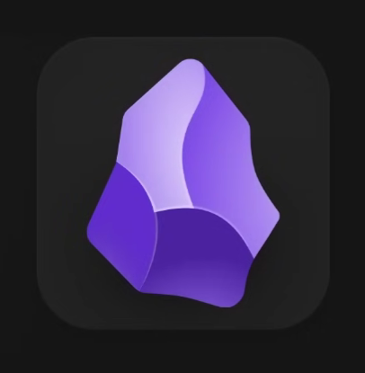
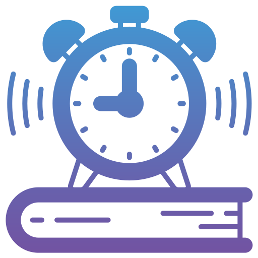

Obsidian
أداة لتنظيم الملاحظات وربط الأفكار والمعلومات، وبناء قاعدة معرفة خاصة بك للمذاكرة.
مجموعة أدوات تساعدك على تنظيم المذاكرة والتعلم.

أداة لتنظيم الملاحظات وربط الأفكار والمعلومات، وبناء قاعدة معرفة خاصة بك للمذاكرة.

نظّم وقت المذاكرة والتركيز من خلال مؤقت بسيط وسهل الاستخدام.
مساعد ذكي لفهم المصادر والملفات الدراسية وتلخيصها والإجابة عن الأسئلة اعتمادًا عليها.
سبورة تفاعلية للشرح والمذاكرة والمحاضرات.